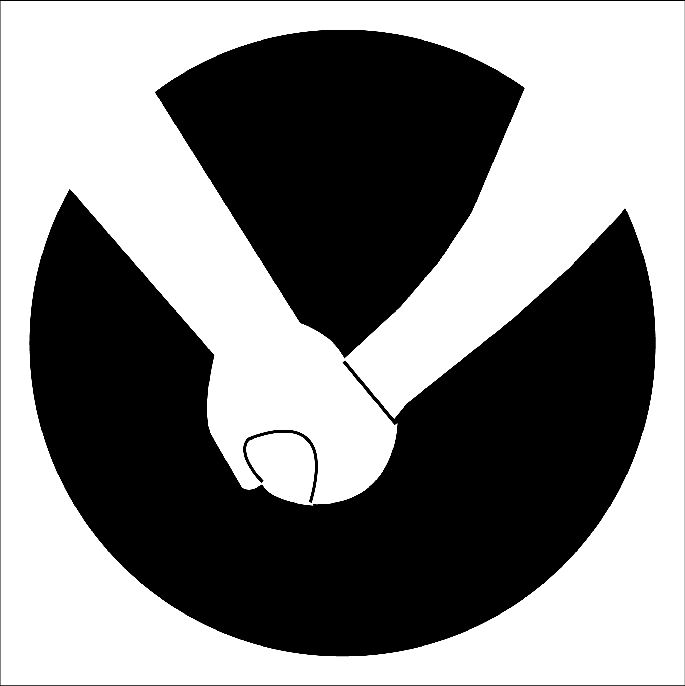
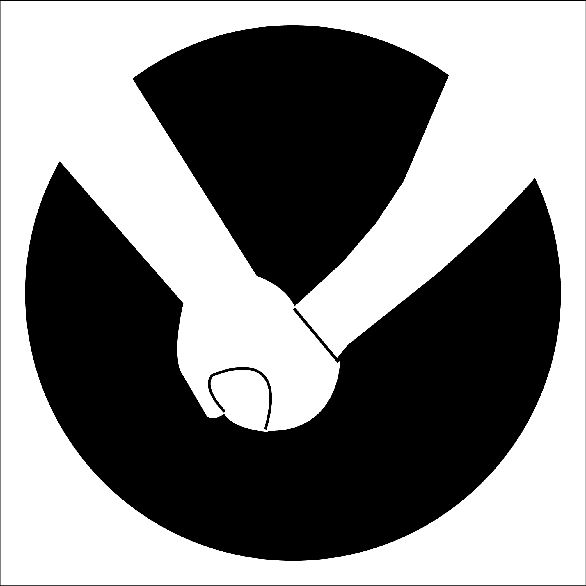
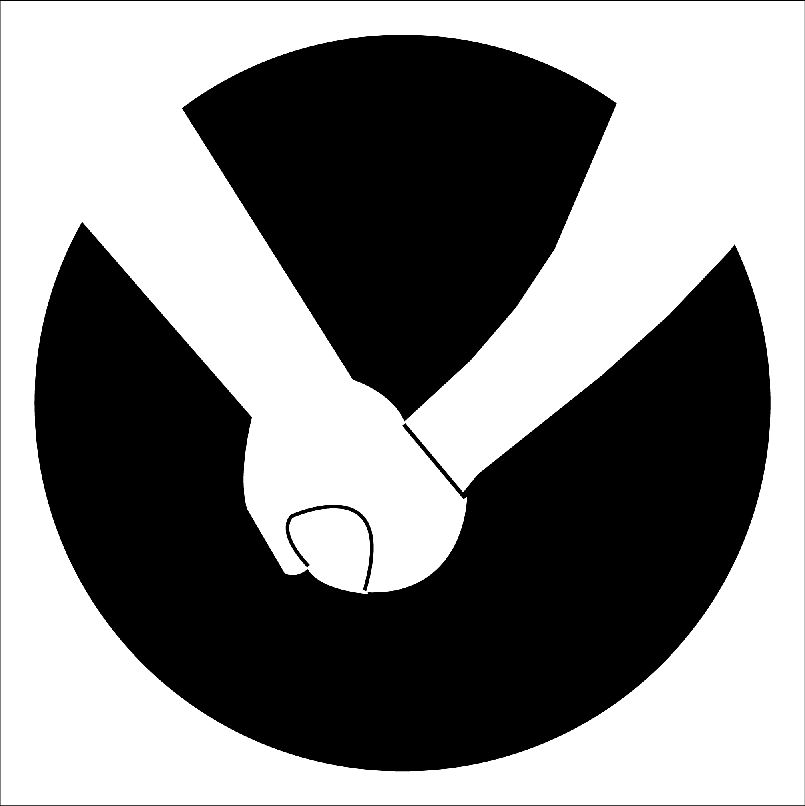
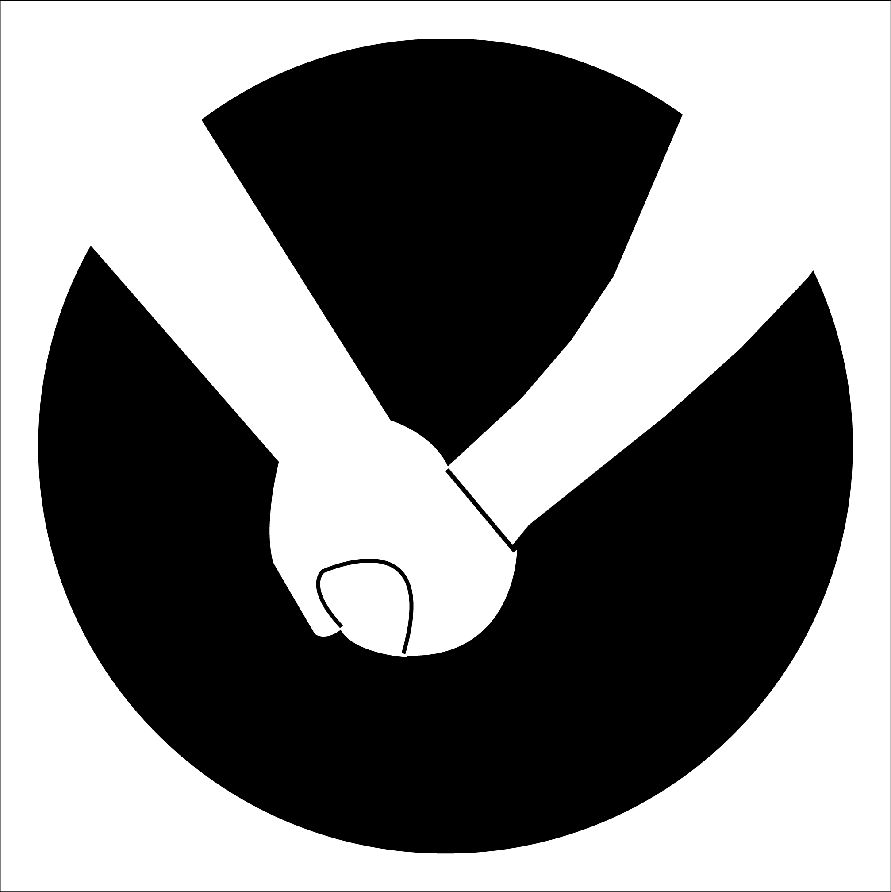

宮崎県国際交流協会では、宮崎に住む外国人の日本語学習をサポートしてくださる「日本語ボランティア」を随時募集しています。
・大学・大学院において日本語教育に関する主専攻または副専攻を修了し、卒業した方 ・日本語教育能力検定試験に合格した方 ・日本語教師養成講座（420時間）を受講した方 ・協会が主催する「日本語学習支援者（日本語ボランティア）スキルアップ講座」を受講した方 ※下の講座情報をご覧ください。 ・他団体の日本語学習支援者（日本語ボランティア）講座を受講した方 ・日本語を教えた経験のある方（継続して半年以上）
（１）当事業の趣旨、目的を理解・賛同し、国籍や民族を問わず、学習者が希望する支援を心がけてください。 （２）活動で得た学習者の個人情報等を他者に漏らさないでください。 （３）日本語学習支援のスキルアップのために各種研修会等に参加いただきます。
（１）日本語を学びたい外国人（日本語学習者）からの申し込みを受け付けると、協会は条件の合うボランティアを探し、連絡をします。 （２）活動する日時や場所などを決めた後、顔合わせします。 （３）問題がなければ、活動開始です。 （４）学習期間が終了した場合は、その旨を協会へ連絡をします。
（公財）宮崎県国際交流協会 〒880-0805 宮崎市橘通東4-8-1 カリーノ宮崎地下１階 TEL:0985-32-8457 FAX:0985-32-8512 Email:miyainfo@mif.or.jp